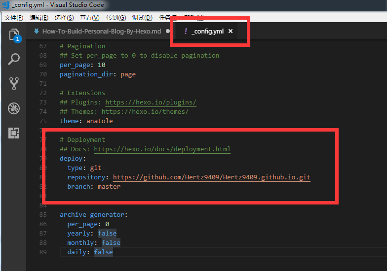
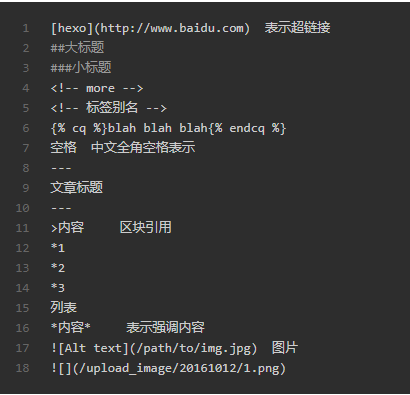

How To Build Personal Blog By Hexo
XDATA
6月 13, 2018
Hexo,Github搭建个人Blog踩坑
准备工作
- 下载安装node.js(推荐使用淘宝npm镜像)
- 下载安装git
- 下载安装github desktop(用于blog与github关联时验证账户)
- 利用npm安装hexo( npm install -g hexo)
部署Hexo
- 创建工作空间,cd到工作空间
- 初始化hexo
hexo init - 安装依赖(npm install)
本地启动
- 发布静态网页(hexo g),在public目录下
- 启动本地服务器(hexo server),默认端口4000
将博客与Github关联
- 在Github上创建名字为XXX.github.io的项目,XXX为自己的github用户名。
- 打开工作空间下的_config.yml配置文件，添加配置
 - 运行
npm install hexo-deployer-git -save hexo g生成静态文件hexo d将本地静态文件推送至github,中途可能会进行用户验证- 浏览器访问https://hertz9409.github.io/
创建博客文章并发布
- hexo new “my new md”
- 编写markdown内容
- hexo clean,删除本地静态文件
- hexo g,重新生成本地静态文件
- hexo deploy,将本地静态文件推送至github
在文章中使用图片
方法一
- 在文章中写入

- 在themes主题文件夹下source目录下，新建目录upload_image，把图片放到该目录下
- 执行hexo g命令时会自动上传图片
方法二 - 安装npm插件hexo-asset-image
使用主题
- 进入主题商店,查看主题
- cd 工作空间中的themes文件夹
- 执行命令
git clone https://github.com/Ben02/hexo-theme-Anatole.git themes/anatole - 主题更新
cd anatole git pull
常见MarkDown语法
